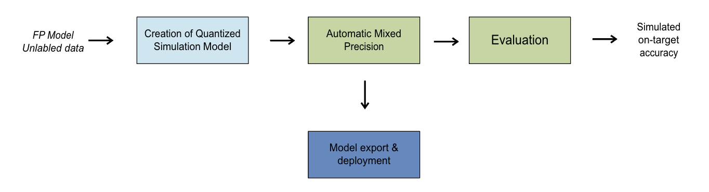
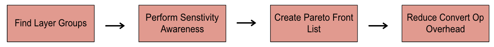
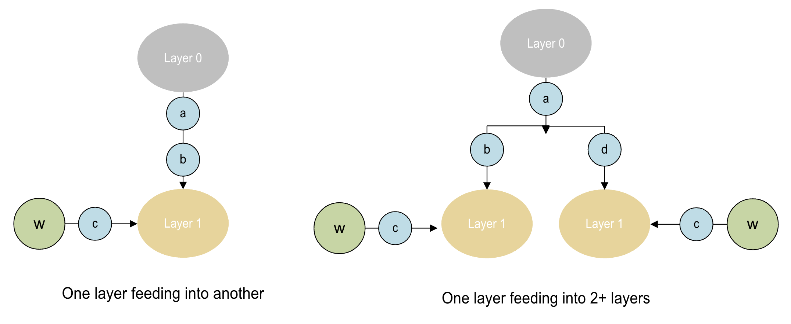
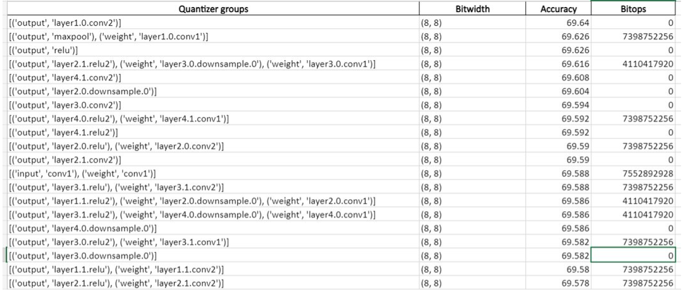
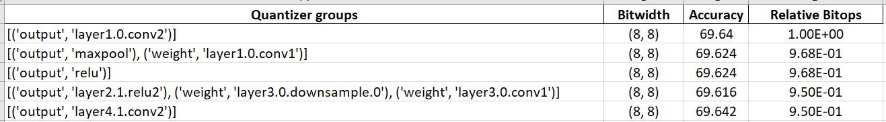
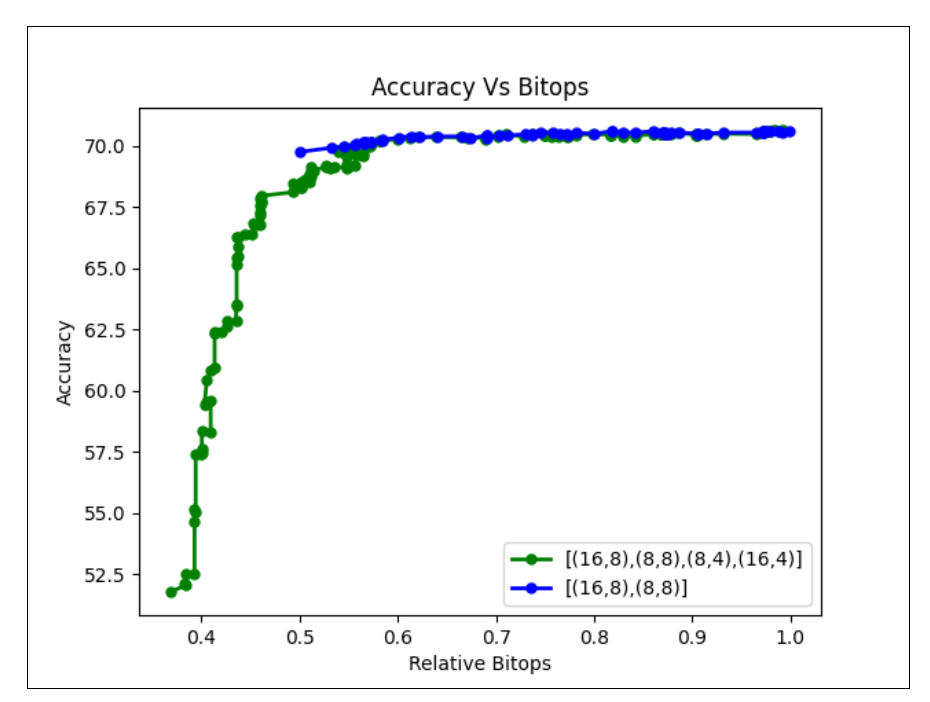

Automatic mixed precision¶
This technique helps choose per-layer integer bit-widths to retain model accuracy when run on fixed-point runtimes like Qualcomm® AI Engine Direct.
As an example, say a particular model is not meeting a desired accuracy target when run in INT8. The Auto Mixed Precision (AMP) feature will find a minimal set of layers that need to run on higher precision, INT16 for example, to get to the desired quantized accuracy.
Choosing a higher precision for some layers necessarily involves a trade-off: lower inferences/sec for higher accuracy and vice-versa. The AMP feature will generate a pareto curve that can guide the user to decide the right operating point for this tradeoff.
Context¶
For performing AMP, a user needs to start with a PyTorch, TensorFlow or ONNX model and create a
Quantization Simulation model QuantizationSimModel. This QuantSim model, along with an
allowable accuracy drop, is passed to the API.
The function changes the QuantSim Sim model in place with different quantizers having different bit-widths. This QuantSim model can be either exported or evaluated to get a quantization accuracy.
{kind=link}
Mixed Precision Algorithm¶
The algorithm involves 4 phases:
{kind=link}
1) Find layer groups¶
Layer Groups are defined as a group of layers grouped together based on certain rules. This helps in reducing search space over which the mixed precision algorithm operates. It also ensures that we search only over the valid bit-width settings for parameters and activations.
{kind=link}
2) Perform sensitivity analysis (Phase 1)¶
In this phase the algorithm performs a per-layer group sensitivity analysis. This will identify how sensitive is the model if we choose a lower quantization bit-width for a particular layer group. The sensitivity analysis yields an accuracy list which is cached and can be re-used again by the algorithm.
Below is an example of a list generated using sensitivity analysis:

{kind=link}
3) Create a Pareto-front list (Phase 2)¶
A Pareto curve is a trade-off curve that describes how accuracy varies given a bit-ops target and vice versa. The AMP algorithm yields a Pareto front curve which consists of layer groups changed up to that point, relative bit-ops (relative to starting bit-ops), accuracy of the model, and the bit-width to which the layer group was changed to.
An example of a Pareto list:
Bit-ops are computed as
\(Bit-ops = Mac(op) * Bitwidth(parameter) * Bitwidth(Activation)\)
The Pareto list can be used for plotting a Pareto curve. A Bokeh plot for Pareto curve is generated and saved in the results directory.

{kind=link}
{kind=link}
Note
A user can pass two different evaluation callbacks for phase 1 and phase 2. Since phase 1 is measuring sensitivity of each quantizer group, we can pass a smaller representative dataset for phase 1 for evaluation, or even use an indirect measure such as SQNR which can be computed faster than but correlates well with the real evaluation metric.
It is recommended to use the complete dataset for evaluation in phase 2.
4) Reduce Bit-width Convert Op Overhead (Phase 3)¶
Convert Ops are introduced in the mixed-precision model for transition between Ops that are assigned different activation bit-widths or data types (float vs int). These Convert Ops contribute to the inference time along with bit-operations of Ops. In this phase the algorithm derives a mixed-precision solution having less Convert Op overhead w.r.t. to original solution keeping the mixed-precision accuracy intact. The algorithm produces mixed-precision solutions for a range of alpha values (0.0, 0.2, 0.4, 0.6, 0.8, 1.0) where the alpha represents fraction of original Convert Op overhead allowed for respective solution.
Use Cases¶
Choosing a very high accuracy drop (equivalent to setting allowed_accuracy_drop as None):
AIMET allows a user to save intermediate states for computation of the Pareto list. Therefore, if a user computes a Pareto list corresponding to an accuracy drop of None, they can view the complete profile of how model accuracy will vary as bit-ops vary.
Thereafter, a user can visualize the Pareto curve plot and choose an optimal point for accuracy. The algorithm can be re-run with the new accuracy drop to get a sim model with the required accuracy.
Note
The Pareto list is not modified during the second run.
Choosing a lower accuracy drop and then continuing to compute pareto list from this point if more accuracy drop is acceptable:
To enable this a user can use the clean_start parameter in the API. If clean_start is set to False then the Pareto list will start computation from the last point where it left off.
Note
It is recommended to set the clean_start parameter to False to use cached results for both use cases.
If the model or candidate bit-widths change, the user needs to do a clean start.
Workflow¶
Code example¶
Step 1¶
Required imports
import torch
import torchvision
from torch.utils.data import DataLoader
from tqdm import tqdm
from aimet_torch.batch_norm_fold import fold_all_batch_norms
from aimet_common.defs import QuantizationDataType, CallbackFunc
from aimet_torch.v1.mixed_precision import choose_mixed_precision
from aimet_torch.quantsim import QuantizationSimModel
from aimet_torch.amp.mixed_precision_algo import GreedyMixedPrecisionAlgo
Load the model, define forward_pass and evaluation callbacks
# General setup that can be changed as needed
device = "cuda:0" if torch.cuda.is_available() else "cpu"
model = torchvision.models.mobilenet_v2(pretrained=True).eval().to(device)
batch_size = 64
PATH_TO_IMAGENET = ...
data = torchvision.datasets.ImageNet(PATH_TO_IMAGENET, split="train")
data_loader = DataLoader(data, batch_size=batch_size)
dummy_input = torch.randn(1, 3, 224, 224).to(device)
fold_all_batch_norms(model, dummy_input.shape)
# Callback function to pass calibration data through the model
def forward_pass(model: torch.nn.Module, batches):
with torch.no_grad():
for batch, (images, _) in enumerate(data_loader):
images = images.to(device)
model(images)
if batch >= batches:
break
# Basic ImageNet evaluation function
def evaluate(model, data_loader):
model.eval()
correct = 0
with torch.no_grad():
for data, labels in tqdm(data_loader):
data, labels = data.to(device), labels.to(device)
logits = model(data)
correct += (logits.argmax(1) == labels).type(torch.float).sum().item()
accuracy = correct / len(data_loader.dataset)
return accuracy
Required imports
import os
os.environ['TF_CPP_MIN_LOG_LEVEL'] = "2"
import tensorflow as tf
tf.compat.v1.logging.set_verbosity(tf.compat.v1.logging.ERROR)
import random
import numpy as np
from tensorflow.keras.applications.resnet import ResNet50, preprocess_input, decode_predictions
from aimet_tensorflow.keras.quantsim import QuantizationSimModel
from aimet_common.defs import CallbackFunc, QuantizationDataType, QuantScheme
from aimet_tensorflow.keras.batch_norm_fold import fold_all_batch_norms
from aimet_tensorflow.keras.mixed_precision import choose_mixed_precision
from aimet_tensorflow.keras.amp.mixed_precision_algo import GreedyMixedPrecisionAlgo
Load the model, define forward_pass and evaluation callbacks
# Load the model
model = ResNet50(weights="imagenet")
# Perform batch norm folding
_, model = fold_all_batch_norms(model)
def center_crop(image):
"""
Perform the center corp on the images.
:param image: List of images as tensors which we need to center corp. Expects the image size of 256 x 256.
:return: Center corped images of size 224 x 224
"""
img_height = 256
img_width = 256
crop_length = 224
start_x = (img_height - crop_length) // 2
start_y = (img_width - crop_length) // 2
cropped_image = image[:, start_x:(img_width - start_x), start_y:(img_height - start_y), :]
return cropped_image
def get_eval_func(dataset_dir, batch_size, num_iterations=50000):
"""
Helper Function returns an evaluation function which performs the forward pass on the specified model
with given dataset parameters
:param dataset_dir: Directrory from where the dataset images needs to be loaded.
:param batch_size: Batch size to be used in dataloader
:param num_iterations: Optional parameter stating total number of images to be used.
Default set to 50000, which is size of the validation set of imagenet dataset.
:return: returns a evaluation function which can be used to evaluate the model's accuracy on the preset dataset.
"""
def func_wrapper(model, iterations):
""" Evaluation Function which is return from the parent function. Performs the forward pass on the model with the given dataset and retuerns the acuracy."""
validation_ds = tf.keras.preprocessing.image_dataset_from_directory(
directory=dataset_dir,
labels='inferred',
label_mode='categorical',
batch_size=batch_size,
shuffle=False)
# If no iterations specified, set to full validation set
if not iterations:
iterations = num_iterations
else:
iterations = iterations * batch_size
top1 = 0
total = 0
for (img, label) in validation_ds:
img = center_crop(img)
x = preprocess_input(img)
preds = model.predict(x,batch_size = batch_size)
label = np.where(label)[1]
label = [validation_ds.class_names[int(i)] for i in label]
cnt = sum([1 for a, b in zip(label, decode_predictions(preds, top=1)) if str(a) == b[0][0]])
top1 += cnt
total += len(label)
if total >= iterations:
break
return top1/total
return func_wrapper
def get_data_loader_wrapper(dataset_dir, batch_size, is_training=False):
"""
Helper function which returns a method calling which will give a data loader.
:param dataset_dir: Directrory from where the dataset images needs to be loaded.
:param batch_size: Batch size to be used in dataloader
:param is_training: Default to False. It is used to set the shuffle flag for the data loader.
:return: Returns a wrapper function which will return a dataloader.
"""
def dataloader_wrapper():
dataloader = tf.keras.preprocessing.image_dataset_from_directory(
directory=dataset_dir,
labels='inferred',
label_mode='categorical',
batch_size=batch_size,
shuffle = is_training,
image_size=(256, 256))
return dataloader.map(lambda x, y: preprocess_input(center_crop(x)))
return dataloader_wrapper
# get the evaluation function
# We will use this function to for forward pass callback as well.
batch_size = 32
dataset_dir = ... # path to dataset directory.
eval_func = get_eval_func(dataset_dir, batch_size)
# Calculate the Original Model accuracy
org_top1 = eval_func(model, None)
print("Original Model Accuracy: ", org_top1)
Required imports
import math
import os
import numpy as np
import onnx
import onnxsim
import torch
from datasets import load_dataset
from torchvision import transforms
from torchvision.models import MobileNet_V2_Weights, mobilenet_v2
from tqdm import tqdm
from aimet_onnx.defs import DataLoader
from aimet_onnx.quantsim import QuantizationSimModel
from aimet_common.defs import QuantizationDataType, CallbackFunc
from aimet_onnx.mixed_precision import choose_mixed_precision
Instantiate a PyTorch model, convert to ONNX graph, define forward_pass and evaluation callbacks
pt_model = mobilenet_v2(weights=MobileNet_V2_Weights.DEFAULT)
input_shape = (1, 3, 224, 224)
dummy_input = torch.randn(input_shape)
# Modify file_path as you wish, we are using temporary directory for now
file_path = os.path.join('/tmp', f'mobilenet_v2.onnx')
torch.onnx.export(
pt_model,
(dummy_input,),
file_path,
input_names=['input'],
output_names=['output'],
dynamic_axes={
'input': {0: 'batch_size'},
'output': {0: 'batch_size'},
},
)
# Load exported ONNX model
model = onnx.load_model(file_path)
# End of loading the model
# Prepare model with onnx-simplifier
try:
model, _ = onnxsim.simplify(model)
except:
print('ONNX Simplifier failed. Proceeding with unsimplified model')
# End of prepare model
# Set up dataloader
dataset = load_dataset(
'ILSVRC/imagenet-1k',
split='validation',
).shuffle()
class CustomDataLoader(DataLoader):
def __init__(
self,
data: np.ndarray,
batch_size: int,
iterations: int,
unlabeled: bool = True,
):
super().__init__(data, batch_size, iterations)
self._current_iteration = 0
self._unlabeled = unlabeled
def __iter__(self):
self._current_iteration = 0
return self
def __next__(self):
if self._current_iteration < self.iterations:
start = self._current_iteration * self.batch_size
end = start + self.batch_size
self._current_iteration += 1
batch_data = self._data[start:end]
if self._unlabeled:
return np.stack(batch_data['image'])
else:
return np.stack(batch_data['image']), np.stack(batch_data['label'])
else:
raise StopIteration
preprocess = transforms.Compose(
[
transforms.Resize(256),
transforms.CenterCrop(224),
transforms.ToTensor(),
transforms.Normalize(mean=[0.485, 0.456, 0.406], std=[0.229, 0.224, 0.225]),
]
)
def transforms(examples):
examples['image'] = [
preprocess(image.convert('RGB')) for image in examples['image']
]
return examples
dataset.set_transform(transforms)
BATCH_SIZE = 32
NUM_CALIBRATION_SAMPLES = 1024
NUM_EVAL_SAMPLES = 50000
unlabeled_data_loader = CustomDataLoader(
dataset, BATCH_SIZE, math.ceil(NUM_CALIBRATION_SAMPLES / BATCH_SIZE)
)
eval_data_loader = CustomDataLoader(
dataset, BATCH_SIZE, math.ceil(NUM_EVAL_SAMPLES / BATCH_SIZE), unlabeled=False
)
# End of setting up dataloader
def forward_pass(session, _):
input_name = session.get_inputs()[0].name
for inputs in tqdm(unlabeled_data_loader):
session.run(None, {input_name: inputs})
def evaluate(session, _):
correct_predictions = 0
total_samples = 0
for inputs, labels in tqdm(eval_data_loader):
input_name = sim.session.get_inputs()[0].name
pred_probs, *_ = sim.session.run(None, {input_name: inputs})
pred_labels = np.argmax(pred_probs, axis=1)
correct_predictions += np.sum(pred_labels == labels)
total_samples += labels.shape[0]
accuracy = correct_predictions / total_samples
return accuracy
Step 2¶
Quantization with mixed precision
default_bitwidth = 16
# ((activation bitwidth, activation data type), (param bitwidth, param data type))
candidates = [((16, QuantizationDataType.int), (16, QuantizationDataType.int)),
((16, QuantizationDataType.int), (8, QuantizationDataType.int)),
((8, QuantizationDataType.int), (16, QuantizationDataType.int))]
# Allowed accuracy drop in absolute value
allowed_accuracy_drop = 0.5 # Implies 50% drop
eval_callback_for_phase_1 = CallbackFunc(evaluate, func_callback_args=data_loader)
eval_callback_for_phase_2 = CallbackFunc(evaluate, func_callback_args=data_loader)
calibration_batches = 10
forward_pass_call_back = CallbackFunc(forward_pass, func_callback_args=calibration_batches)
# Create quant sim
sim = QuantizationSimModel(model,
default_param_bw=default_bitwidth,
default_output_bw=default_bitwidth,
dummy_input=dummy_input)
sim.compute_encodings(forward_pass, forward_pass_callback_args=calibration_batches)
# Enable phase-3 (optional)
GreedyMixedPrecisionAlgo.ENABLE_CONVERT_OP_REDUCTION = True
# Call the mixed precision algo with clean start = True i.e. new accuracy list and pareto list will be generated
# If set to False then pareto front list and accuracy list will be loaded from the provided directory path
# A allowed_accuracy_drop can be specified to export the final model with reference to the pareto list
pareto_front_list = choose_mixed_precision(sim, dummy_input, candidates, eval_callback_for_phase_1,
eval_callback_for_phase_2, allowed_accuracy_drop, results_dir='./data',
clean_start=True, forward_pass_callback=forward_pass_call_back)
print(pareto_front_list)
# Set clean_start to False to start from an existing cache
# Set allowed_accuracy_drop to 0.9 to export the 90% drop point in pareto list
allowed_accuracy_drop = 0.9
pareto_front_list = choose_mixed_precision(sim, dummy_input, candidates, eval_callback_for_phase_1,
eval_callback_for_phase_2, allowed_accuracy_drop, results_dir='./data',
clean_start=False, forward_pass_callback=forward_pass_call_back)
print(pareto_front_list)
sim.export("./data", str(allowed_accuracy_drop), dummy_input)
Quantization with regular mixed precision
default_bitwidth = 16
# Set the candidates for the mixed precision algorithm
# Candidate format given below
# ((activation bitwidth, activation data type), (param bitwidth, param data type))
# e.g. ((16, QuantizationDataType.int), (16, QuantizationDataType.int)),
candidate = [((16, QuantizationDataType.int), (8, QuantizationDataType.int)),
((8, QuantizationDataType.int), (8, QuantizationDataType.int))]
# get the quantized model object
sim = QuantizationSimModel(model=model,
default_output_bw=default_bitwidth,
default_param_bw=default_bitwidth,)
sim.compute_encodings(eval_func, forward_pass_callback_args=500)
# The allowed accuracy drop represents the amount of accuracy drop we are accepting
# to trade for a lower precision, faster model.
# 0.09 represents we are accepting upto 9% accuracy drop from the baseline.
allowed_accuracy_drop = 0.09
eval_callback = CallbackFunc(eval_func, None)
forward_pass_callback = CallbackFunc(eval_func, 500)
# Enable phase-3 (optional)
GreedyMixedPrecisionAlgo.ENABLE_CONVERT_OP_REDUCTION = True
# Note: supported candidates ((8,int), (8,int)) & ((16,int), (8,int))
# Call the mixed precision wrapper with appropriate parameters
pareto_front_list = choose_mixed_precision(sim, candidate, eval_callback, eval_callback, allowed_accuracy_drop, "./cmp_res",
clean_start=True, forward_pass_callback=forward_pass_callback)
print("Mixed Precision Model Accuracy: ", eval_func(sim.model, None))
sim.export(filename_prefix='mixed_preision_quant_model', path='.')
Quantization with mixed precision
# Define parameters to pass to mixed precision algo
default_bitwidth = 16
# ((activation bitwidth, activation data type), (param bitwidth, param data type))
candidates = [((16, QuantizationDataType.int), (16, QuantizationDataType.int)),
((16, QuantizationDataType.int), (8, QuantizationDataType.int)),
((8, QuantizationDataType.int), (16, QuantizationDataType.int))]
# Allowed accuracy drop in absolute value
allowed_accuracy_drop = 0.5 # Implies 50% drop
eval_callback_for_phase_1 = CallbackFunc(evaluate, func_callback_args=None)
eval_callback_for_phase_2 = CallbackFunc(evaluate, func_callback_args=None)
forward_pass_callback = CallbackFunc(forward_pass, func_callback_args=None)
# Create quant sim
sim = QuantizationSimModel(model, default_param_bw=default_bitwidth, default_activation_bw=default_bitwidth)
sim.compute_encodings(forward_pass_callback, forward_pass_callback_args=None)
# Call the mixed precision algo with clean start = True i.e. new accuracy list and pareto list will be generated
# If set to False then pareto front list and accuracy list will be loaded from the provided directory path
# A allowed_accuracy_drop can be specified to export the final model with reference to the pareto list
pareto_front_list = choose_mixed_precision(sim, candidates, eval_callback_for_phase_1,
eval_callback_for_phase_2, allowed_accuracy_drop, results_dir='./data',
clean_start=True, forward_pass_callback=forward_pass_callback)
print(pareto_front_list)
# Set clean_start to False to start from an existing cache
# Set allowed_accuracy_drop to 0.9 to export the 90% drop point in pareto list
allowed_accuracy_drop = 0.9
pareto_front_list = choose_mixed_precision(sim, candidates, eval_callback_for_phase_1,
eval_callback_for_phase_2, allowed_accuracy_drop, results_dir='./data',
clean_start=False, forward_pass_callback=forward_pass_callback)
print(pareto_front_list)
sim.export("./data", str(allowed_accuracy_drop))
API¶
Top-level API for Automatic mixed precision
Note
To enable phase-3 set the attribute GreedyMixedPrecisionAlgo.ENABLE_CONVERT_OP_REDUCTION = True
Currently only two candidates are supported - ((8,int), (8,int)) & ((16,int), (8,int))
Quantizer Groups definition
- class aimet_torch.amp.quantizer_groups.QuantizerGroup(input_quantizers=<factory>, output_quantizers=<factory>, parameter_quantizers=<factory>, supported_kernel_ops=<factory>)[source]¶
Group of modules and quantizers
- get_active_quantizers(name_to_quantizer_dict)[source]¶
Find all active tensor quantizers associated with this quantizer group
- get_candidate(name_to_quantizer_dict)[source]¶
Gets Activation & parameter bitwidth :type name_to_quantizer_dict:
Dict:param name_to_quantizer_dict: Gets module from module name :rtype:Tuple[Tuple[int,QuantizationDataType],Tuple[int,QuantizationDataType]] :return: Tuple of Activation, parameter bitwidth and data type
- get_input_quantizer_modules()[source]¶
helper method to get the module names corresponding to input_quantizers
- set_quantizers_to_candidate(name_to_quantizer_dict, candidate)[source]¶
Sets a quantizer group to a given candidate bitwidth :type name_to_quantizer_dict:
Dict:param name_to_quantizer_dict: Gets module from module name :type candidate:Tuple[Tuple[int,QuantizationDataType],Tuple[int,QuantizationDataType]] :param candidate: candidate with act and param bw and data types- Return type:
None
CallbackFunc Definition
- class aimet_common.defs.CallbackFunc(func, func_callback_args=None)[source]¶
Class encapsulating call back function and it’s arguments
- Parameters:
func (
Callable) – Callable Functionfunc_callback_args – Arguments passed to the callable function
- class aimet_torch.amp.mixed_precision_algo.EvalCallbackFactory(data_loader, forward_fn=None)[source]¶
Factory class for various built-in eval callbacks
- Parameters:
data_loader (
DataLoader) – Data loader to be used for evaluationforward_fn (
Optional[Callable[[Module,Any],Tensor]]) – Function that runs forward pass and returns the output tensor. This function is expected to take 1) a model and 2) a single batch yielded from the data loader, and return a single torch.Tensor object which represents the output of the model. The default forward function is roughly equivalent tolambda model, batch: model(batch)
Top-level API for Regular AMP
- aimet_tensorflow.keras.mixed_precision.choose_mixed_precision(sim, candidates, eval_callback_for_phase1, eval_callback_for_phase2, allowed_accuracy_drop, results_dir, clean_start, forward_pass_callback, amp_search_algo=AMPSearchAlgo.Binary, phase1_optimize=True)[source]¶
High-level API to perform in place Mixed Precision evaluation on the given sim model. A pareto list is created and a curve for Accuracy vs BitOps is saved under the results directory
- Parameters:
sim (
QuantizationSimModel) – Quantized sim modelinput_shape – tuple or list of tuples of input shape to the model
starting_op_names – List of starting op names of the model
output_op_names – List of output op names of the model
candidates (
List[Tuple[Tuple[int,QuantizationDataType],Tuple[int,QuantizationDataType]]]) –List of tuples for all possible bitwidth values for activations and parameters Suppose the possible combinations are- ((Activation bitwidth - 8, Activation data type - int), (Parameter bitwidth - 16, parameter data type - int)) ((Activation bitwidth - 16, Activation data type - float), (Parameter bitwidth - 16, parameter data type - float)) candidates will be [((8, QuantizationDataType.int), (16, QuantizationDataType.int)),
((16, QuantizationDataType.float), (16, QuantizationDataType.float))]
eval_callback_for_phase1 (
CallbackFunc) – An object of CallbackFunc class which takes in Eval function (callable) and eval function parameters. This evaluation callback used to measure sensitivity of each quantizer group during phase 1. The phase 1 involves finding accuracy list/sensitivity of each module. Therefore, a user might want to run the phase 1 with a smaller dataseteval_callback_for_phase2 (
CallbackFunc) – An object of CallbackFunc class which takes in Eval function (callable) and eval function parameters. Evaluation callback used to get accuracy of quantized model for phase 2 calculations. The phase 2 involves finding pareto front curveallowed_accuracy_drop (
Optional[float]) – Maximum allowed drop in accuracy from FP32 baseline. The pareto front curve is plotted only till the point where the allowable accuracy drop is met. To get a complete plot for picking points on the curve, the user can set the allowable accuracy drop to None.results_dir (
str) – Path to save results and cache intermediate resultsclean_start (
bool) – If true, any cached information from previous runs will be deleted prior to starting the mixed-precision analysis. If false, prior cached information will be used if applicable. Note it is the user’s responsibility to set this flag to true if anything in the model or quantization parameters changes compared to the previous run.forward_pass_callback (
CallbackFunc) – An object of CallbackFunc class which takes in Forward pass function (callable) and its function parameters. Forward pass callback used to compute quantization encodingsamp_search_algo (
AMPSearchAlgo) – A valid value from the Enum AMPSearchAlgo. Defines the search algorithm to be used for the phase 2 of AMP. Default to BruteForce for regular AMP.phase1_optimize (
bool) – If user set this parameter to false then phase1 default logic will be executed else optimized logic will be executed.
- Return type:
Optional[List[Tuple[int,float,QuantizerGroup,int]]]- Returns:
Pareto front list containing a list of (Relative bit ops wrt baseline candidate, eval score, quantizer group and the candidate being used in each step). The Pareto front list can be used for plotting a pareto front curve which provides information regarding how bit ops vary w.r.t. accuracy. If the allowable accuracy drop is set to 100% then a user can use the pareto front curve to pick points and re-run, None if we early exit the mixed precision algorithm.
Top-level API for Fast AMP (AMP 2.0)
- aimet_tensorflow.keras.mixed_precision.choose_fast_mixed_precision(sim, candidates, data_loader_wrapper, eval_callback_for_phase2, allowed_accuracy_drop, results_dir, clean_start, forward_pass_callback, forward_pass_callback_2=None, amp_search_algo=AMPSearchAlgo.Binary, phase1_optimize=True)[source]¶
High-level API to perform in place Mixed Precision evaluation on the given sim model. A pareto list is created and a curve for Accuracy vs BitOps is saved under the results directory
- Parameters:
sim (
QuantizationSimModel) – Quantized sim modelcandidates (
List[Tuple[Tuple[int,QuantizationDataType],Tuple[int,QuantizationDataType]]]) –List of tuples for all possible bitwidth values for activations and parameters Suppose the possible combinations are- ((Activation bitwidth - 8, Activation data type - int), (Parameter bitwidth - 16, parameter data type - int)) ((Activation bitwidth - 16, Activation data type - float), (Parameter bitwidth - 16, parameter data type - float)) candidates will be [((8, QuantizationDataType.int), (16, QuantizationDataType.int)),
((16, QuantizationDataType.float), (16, QuantizationDataType.float))]
data_loader_wrapper (
Callable) – A Callable function which when called should return a dataloader to be used to do phase 1 forward pass.eval_callback_for_phase2 (
CallbackFunc) – An object of CallbackFunc class which takes in Eval function (callable) and eval function parameters. Evaluation callback used to get accuracy of quantized model for phase 2 calculations. The phase 2 involves finding pareto front curveallowed_accuracy_drop (
Optional[float]) – Maximum allowed drop in accuracy from FP32 baseline. The pareto front curve is plotted only till the point where the allowable accuracy drop is met. To get a complete plot for picking points on the curve, the user can set the allowable accuracy drop to None.results_dir (
str) – Path to save results and cache intermediate resultsclean_start (
bool) – If true, any cached information from previous runs will be deleted prior to starting the mixed-precision analysis. If false, prior cached information will be used if applicable. Note it is the user’s responsibility to set this flag to true if anything in the model or quantization parameters changes compared to the previous run.forward_pass_callback (
CallbackFunc) – An object of CallbackFunc class which takes in Forward pass function (callable) and its function parameters. Forward pass callback used to compute quantization encodingsforward_pass_callback_2 (
Optional[Callable]) – forward pass callback function which will take an input model and inputs and perform forward pass on it and return the output nupy ndarray of the last layer. Can be kept None if the model works with the standard model.predict() forward passamp_search_algo (
AMPSearchAlgo) – A valid value from the Enum AMPSearchAlgo. Defines the search algorithm to be used for the phase 2 of AMP. Default to Interpolation for fast AMP.phase1_optimize (
bool) – If user set this parameter to false then phase1 default logic will be executed else optimized logic will be executed.
- Return type:
Optional[List[Tuple[int,float,QuantizerGroup,int]]]- Returns:
Pareto front list containing a list of (Relative bit ops wrt baseline candidate, eval score, quantizer group and the candidate being used in each step). The Pareto front list can be used for plotting a pareto front curve which provides information regarding how bit ops vary w.r.t. accuracy. If the allowable accuracy drop is set to 100% then a user can use the pareto front curve to pick points and re-run, None if we early exit the mixed precision algorithm.
Note
To enable phase-3 set the attribute GreedyMixedPrecisionAlgo.ENABLE_CONVERT_OP_REDUCTION = True
Currently only two candidates are supported - ((8,int), (8,int)) & ((16,int), (8,int))
Quantizer Groups definition
- class aimet_tensorflow.keras.amp.quantizer_groups.QuantizerGroup(input_quantizers=<factory>, output_quantizers=<factory>, parameter_quantizers=<factory>)[source]¶
Group of modules and quantizers
- get_active_param_quantizers(name_to_quantizer_dict)[source]¶
Find all active param tensor quantizers associated with this quantizer group :type name_to_quantizer_dict:
Dict:param name_to_quantizer_dict: Contains mapping of module name to sim.quantizer_config object- Return type:
List[TensorQuantizer]
- get_active_quantizers(name_to_quantizer_dict)[source]¶
Find all active tensor quantizers associated with this quantizer group
- Return type:
List[TensorQuantizer]
- get_candidate(name_to_quantizer_dict)[source]¶
Gets Activation & parameter bitwidth :type name_to_quantizer_dict:
Dict:param name_to_quantizer_dict: Gets module from module name :rtype:Tuple[Tuple[int,QuantizationDataType],Tuple[int,QuantizationDataType]] :return: Tuple of Activation, parameter bitwidth and data type
- static lookup_quantizer(quantizer_name, name_to_quantizer_dict)[source]¶
Returns the quantizer layer corresponding to the name :quantizer_name: Name of the quantizer :name_to_quantizer_dict: Dictionary of mappings from quantizer name to quantizer layer
- Return type:
Layer
- set_quantizers_to_candidate(name_to_quantizer_dict, candidate)[source]¶
Sets a quantizer group to a given candidate bitwidth :type name_to_quantizer_dict:
Dict:param name_to_quantizer_dict: Gets module from module name :type candidate:Tuple[Tuple[int,QuantizationDataType],Tuple[int,QuantizationDataType]] :param candidate: candidate with act and param bw and data types- Return type:
None
CallbackFunc Definition
Top-level API
- aimet_onnx.mixed_precision.choose_mixed_precision(sim, candidates, eval_callback_for_phase1, eval_callback_for_phase2, allowed_accuracy_drop, results_dir, clean_start, forward_pass_callback, use_all_amp_candidates=False, phase1_optimize=True, amp_search_algo=AMPSearchAlgo.Binary)[source]¶
High-level API to perform in place Mixed Precision evaluation on the given sim model. A pareto list is created and a curve for Accuracy vs BitOps is saved under the results directory
- Parameters:
sim (
QuantizationSimModel) – Quantized sim modelcandidates (
List[Tuple[Tuple[int,QuantizationDataType],Tuple[int,QuantizationDataType]]]) –List of tuples for all possible bitwidth values for activations and parameters Suppose the possible combinations are- ((Activation bitwidth - 8, Activation data type - int), (Parameter bitwidth - 16, parameter data type - int)) ((Activation bitwidth - 16, Activation data type - float), (Parameter bitwidth - 16, parameter data type - float)) candidates will be [((8, QuantizationDataType.int), (16, QuantizationDataType.int)),
((16, QuantizationDataType.float), (16, QuantizationDataType.float))]
eval_callback_for_phase1 (
Callable[[InferenceSession],float]) – Callable object used to measure sensitivity of each quantizer group during phase 1. The phase 1 involves finding accuracy list/sensitivity of each module. Therefore, a user might want to run the phase 1 with a smaller dataseteval_callback_for_phase2 (
Callable[[InferenceSession],float]) – Callale object used to get accuracy of quantized model for phase 2 calculations. The phase 2 involves finding pareto front curveallowed_accuracy_drop (
Optional[float]) – Maximum allowed drop in accuracy from FP32 baseline. The pareto front curve is plotted only till the point where the allowable accuracy drop is met. To get a complete plot for picking points on the curve, the user can set the allowable accuracy drop to None.results_dir (
str) – Path to save results and cache intermediate resultsclean_start (
bool) – If true, any cached information from previous runs will be deleted prior to starting the mixed-precision analysis. If false, prior cached information will be used if applicable. Note it is the user’s responsibility to set this flag to true if anything in the model or quantization parameters changes compared to the previous run.forward_pass_callback (
Callable[[InferenceSession],Any]) – Callable object used to compute quantization encodingsuse_all_amp_candidates (
bool) – Using the “supported_kernels” field in the config file (under defaults and op_type sections), a list of supported candidates can be specified. All the AMP candidates which are passed through the “candidates” field may not be supported based on the data passed through “supported_kernels”. When the field “use_all_amp_candidates” is set to True, the AMP algorithm will ignore the “supported_kernels” in the config file and continue to use all candidates.amp_search_algo (
AMPSearchAlgo) – A valid value from the Enum AMPSearchAlgo. Defines the search algorithm to be used for the phase 2 of AMP.
- Phase1_optimize:
If user set this parameter to false then phase1 default logic will be executed else optimized logic will be executed.
- Return type:
Optional[List[Tuple[int,float,QuantizerGroup,int]]]- Returns:
Pareto front list containing information including Bitops, QuantizerGroup candidates and corresponding eval scores. The Pareto front list can be used for plotting a pareto front curve which provides information regarding how bit ops vary w.r.t. accuracy. If the allowable accuracy drop is set to 100% then a user can use the pareto front curve to pick points and re-run, None if we early exit the mixed precision algorithm.
Note
It is recommended to use onnx-simplifier before applying mixed-precision.
Quantizer Groups definition
- class aimet_onnx.amp.quantizer_groups.QuantizerGroup(parameter_quantizers=<factory>, activation_quantizers=<factory>)[source]¶
Group of modules and quantizers
- get_activation_quantizers(name_to_quantizer_dict)[source]¶
Gets activation quantizers
- Parameters:
name_to_quantizer_dict – Gets module from module name
:return List of activation quantizers
- get_active_quantizers(name_to_quantizer_dict)[source]¶
Find all active tensor quantizers associated with this quantizer group
- Parameters:
name_to_quantizer_dict – Gets module from module name
- Return type:
List[QcQuantizeOp]- Returns:
List of active quantizers
- get_candidate(name_to_quantizer_dict)[source]¶
Gets Activation & parameter bitwidth
- Parameters:
name_to_quantizer_dict (
Dict) – Gets module from module name- Return type:
Tuple[Tuple[int,QuantizationDataType],Tuple[int,QuantizationDataType]]- Returns:
Tuple of Activation, parameter bitwidth and data type
- get_param_quantizers(name_to_quantizer_dict)[source]¶
Gets parameter quantizers
- Parameters:
name_to_quantizer_dict – Gets module from module name
:return List of parameter quantizers
- set_quantizers_to_candidate(name_to_quantizer_dict, candidate)[source]¶
Sets a quantizer group to a given candidate bitwidth
- Parameters:
name_to_quantizer_dict (
Dict) – Gets module from module namecandidate (
Tuple[Tuple[int,QuantizationDataType],Tuple[int,QuantizationDataType]]) – candidate with act and param bw and data types
CallbackFunc Definition
- class aimet_common.defs.CallbackFunc(func, func_callback_args=None)[source]¶
Class encapsulating call back function and it’s arguments
- Parameters:
func (
Callable) – Callable Functionfunc_callback_args – Arguments passed to the callable function
- class aimet_onnx.amp.mixed_precision_algo.EvalCallbackFactory(data_loader, forward_fn=None)[source]¶
Factory class for various built-in eval callbacks
- Parameters:
data_loader (
DataLoader) – Data loader to be used for evaluationforward_fn (
Optional[Callable[[InferenceSession,Any],ndarray]]) – Function that runs forward pass and returns the output tensor. This function is expected to take 1) a model 2) List of starting op names 3) List of output op names and 4) batch yielded from the data set, and return a single tf.Tensor (or np.ndarray) object which represents the output of the model.
- sqnr(sim, num_samples=128)[source]¶
Returns SQNR eval callback. NOTE: sim object is required to enable/disable quantizer_info objects associated with quant ops.
- Parameters:
sim (
QuantizationSimModel) – Quantized sim modelnum_samples (
int) – Number of samples used for evaluation
- Return type:
Callable[[InferenceSession],float]- Returns:
A callback function that evaluates model SQNR between fp32_outputs and quantized outputs.